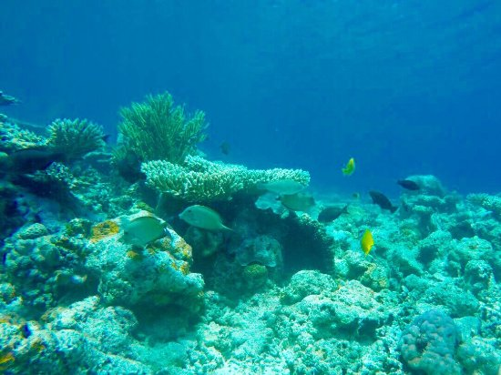

Travel Quotes
"Not all who wander are lost."
~J.R.R. Tolkien
"Never let your memories be greater than your dreams.
~Douglas Ivester"
Harvesting Locations

Location:Great Barrier Reef
Continent: Austrailia

Location:Apo Reef
Country: Phillipines